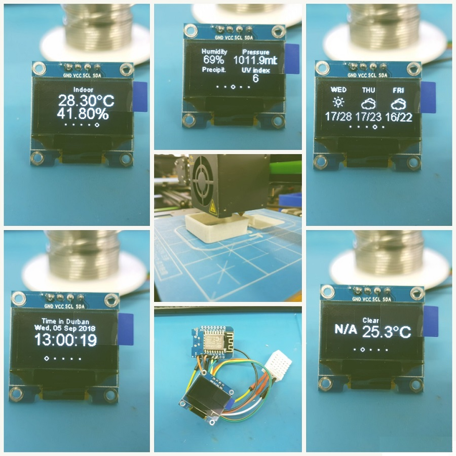
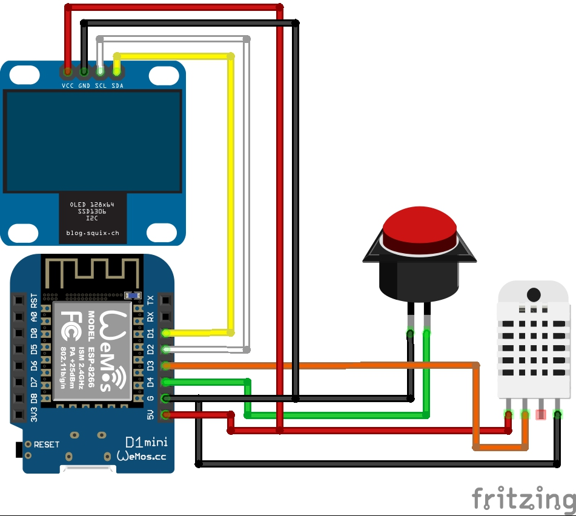

Weather station
 A neat little box that displays the weather conditions of a location of your choice. This project is easy to make and makes a good first time project for beginners. The project switches displays between the current weather, weather forecast for the next 3 days, the current date and time as well as the indoor temperature and humidity. The box also comes with a button that can be coded to switch location.
Parts Required
Wemos D1 Mini x1
4 Pin Oled x1
DHT22 Humidity and Temp sensor x1
3D printed case cover x1
3D printed case x1
Hardware set-up
The diagram below shows clearly how to wire up all your components, a table is also included to show corresponding pins between modules. 
| Wemos D1 Mini pin | Module pin |
|---|---|
| D1 | SDA (OLED) |
| D2 | SCL (OLED) |
| D3 | Data (DHT22) |
| D4 | Pin (Button) |
| Gnd | GND (OLED, Button, DHT22) |
| 5V | 5V (OLED, Button, DHT22) |
Code
All the code you will need for your station can be found in the link below, unzip the file to retrieve your files:
Weather station code: download